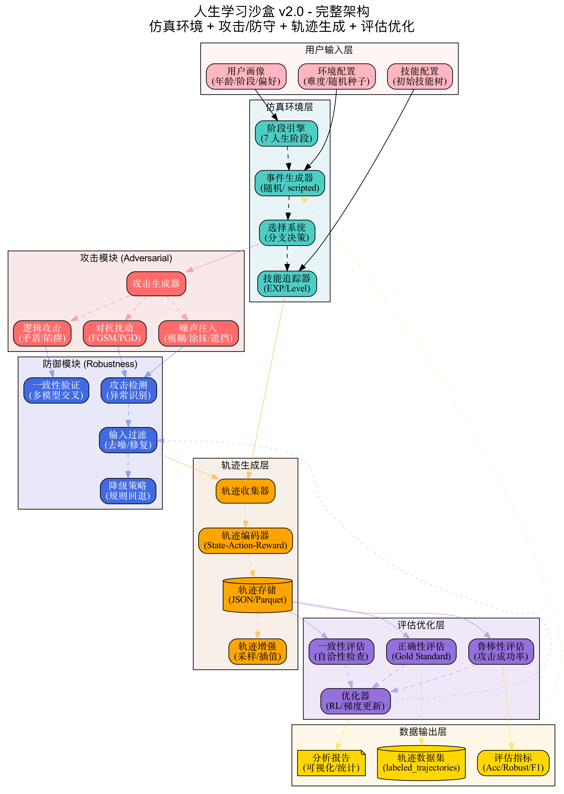
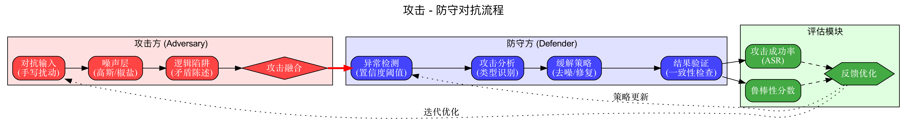
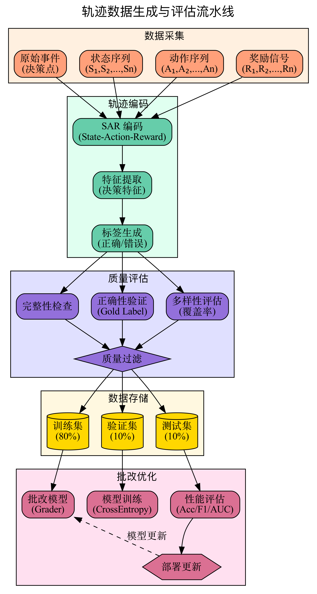
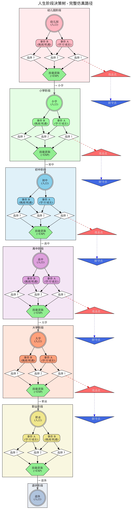
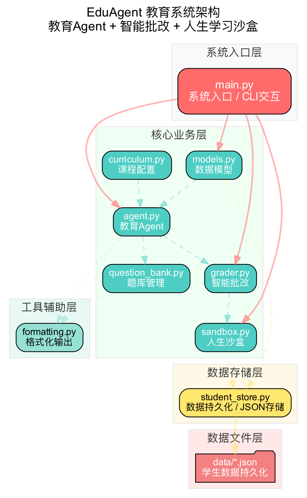

教育 Agent + 智能批改 + 人生学习沙盒 + 多模态手写识别
分阶段教学，从幼儿园到职业阶段自动适配课程。知识点讲解、学习计划生成、学习状态跟踪。
自动批改测验和作文，多维度评分系统，提供详细反馈和改进建议。
模拟人生不同阶段的学习与成长，事件驱动的技能成长系统。
支持手写 OCR 识别、视觉推理、对抗攻击检测的图像批改系统。
$ python3 edu_agent/main.py
╔════════════════════════════════════════════╗
║ 🎓 EduAgent 教育系统 v2.0 (MM) ║
║ 教育 Agent + 智能批改 + 人生学习沙盒 ║
════════════════════════════════════════════╝
📚 [数学] 一元二次方程
━━━━━━━━━━━━━━━━━━━━━━━━━━
💡 让我们用数学的方式来思考这个问题...
📝 已学习次数：1
💪 加油，学习新知识点总是需要时间的！
📝 数学测验 (5 题):
1. sin(90°) = ?
['0', '1', '-1', '0.5']
📊 批改结果：80.0 分 (B (良好))
✅ 第 1 题：1 → 1
✅ 第 2 题：±2 → ±2
git clone https://github.com/yourusername/eduagent.git
cd eduagent
python3 main.py
仿真环境 + 攻击/防守 + 轨迹生成 + 评估优化的完整闭环系统

7 层架构：用户输入 → 仿真环境 → 攻击模块 → 防御模块 → 轨迹生成 → 评估优化 → 数据输出

攻击方 (噪声/逻辑/对抗扰动) → 防守方 (检测/分析/缓解/验证) → 评估反馈迭代

数据采集 → 轨迹编码 (SAR) → 质量评估 → 数据存储 → 批改优化

7 个人生阶段完整决策路径，含攻击点 ⚠️ 与防守点 🛡️ 标记

EduAgent 是一个完整的 AI 教育平台，旨在提供个性化的学习体验。项目从单一的文本批改系统演进为支持多模态输入的智能教育系统。
v2.0 版本引入了多模态能力，支持手写识别、视觉推理和对抗攻击检测，为教育 AI 系统的可靠性提供了新的解决方案。